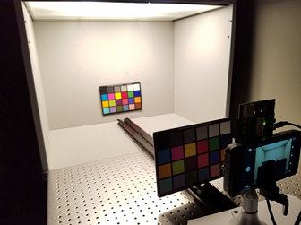

High dynamic range (HDR) AEC will not be effective in a low contrast
scenes. The first step toward testing HDR AEC is to build a simple HDR scene.
-
Use a lightbooth with an outdoor standard-illuminant, such as D50 or D65.
-
Place an MCC chart upsidedown against the light box wall.
-
Place another MCC chart upsidedown approximately two feet in front of the
lightbooth

-
Place the test device one foot away from the second MCC chart and secure it on
a tripod to ensure it does not move.
-
Use the viewfinder to adjust the alignment of the MCC chart so that the gray
patches of both charts are in the center of the image.
To capture images and analysis:
-
Capture one image with both HDR and ADRC disabled.
-
Without moving the test device, capture a second image with HDR enabled.
-
Open Chromatix and select .
-
Select the image where HDR was enabled and click
Open.
-
In the 3A Debug
window, click the Data tab.
-
Expand the AEC Debug
Info group and select HDR
Gains Information.
This will show the short and long gains and line
counts for HDR when it is enabled.
-
Open the image where HDR and ADRC were disabled and retrieve the line count and
gain information.
-
In the 3A Debug window, click the
Data tab
-
Expand the AEC Debug Info group and select
HDR Gains Information.
This will show the short and long gains and line counts for HDR when
it is disabled.
The gain and line count when HDR is disabled should be similar to the
gain and line count of the long real gain and long line count of the
image where HDR was enabled, assuming all other parameters are
identical. To make HDR more effective, it is preferable to increase the
image brightness so that HDR can kick in and correct for saturation. For
that purpose, see Tune dynamic metering for bright
region to allow more saturated stats.